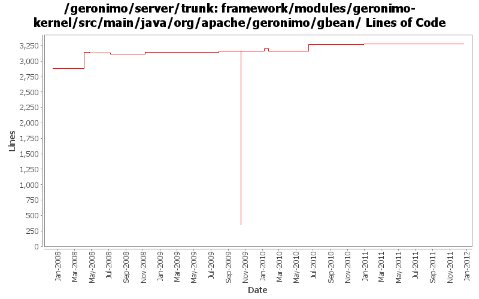

[root]/framework/modules/geronimo-kernel/src/main/java/org/apache/geronimo/gbean
 annotation
(13 files, 788 lines)
annotation
(13 files, 788 lines)
 runtime
(9 files, 3178 lines)
runtime
(9 files, 3178 lines)
 wrapper
(1 files, 77 lines)
wrapper
(1 files, 77 lines)

| Author | Changes | Lines of Code | Lines per Change |
|---|---|---|---|
| Totals | 84 (100.0%) | 3396 (100.0%) | 40.4 |
| djencks | 46 (54.8%) | 3040 (89.5%) | 66.0 |
| gdamour | 18 (21.4%) | 331 (9.7%) | 18.3 |
| genspring | 1 (1.2%) | 9 (0.3%) | 9.0 |
| jdillon | 6 (7.1%) | 7 (0.2%) | 1.1 |
| xuhaihong | 6 (7.1%) | 6 (0.2%) | 1.0 |
| gawor | 7 (8.3%) | 3 (0.1%) | 0.4 |
GERONIMO-6240 make xml attribute and reference builders work and provide GBeanBuilder as a gbean for modules builders to use
0 lines of code changed in 2 files:
GERONIMO-6058 Replace StringBuffer usage with StringBuilder
6 lines of code changed in 6 files:
OSGi related attributes should be copied from existing source gbeaninfo.
9 lines of code changed in 1 file:
refactor code a bit: inject dynamic-import-header in DeploymentContext instead of Environment and generate slightly better import-package headers
0 lines of code changed in 2 files:
GERONIMO-5380 Allow exposing gbeans as osgi services (or service factories). Replace the specialized code in connector with this new generic code. This is not serialziation compatible with old GBeanInfo and GBeanData
138 lines of code changed in 4 files:
GERONIMO-5374 make defaults for @ParameterReference and @Reference work the same as GBeanInfoBuilder
2 lines of code changed in 1 file:
Just use reflection in DynamicGBean, it avoids some bizarre classloader problems
23 lines of code changed in 1 file:
add DelegatingBundle that can delegate calls to multiple Bundles and remove classSource support
3 lines of code changed in 1 file:
GERONIMO-5021 allow gbean classes to be loaded from another plugin, plus use in jetty and jasper
36 lines of code changed in 1 file:
GERONIMO-4916 step 2 move sandbox osgi framework into trunk
2808 lines of code changed in 14 files:
GERONIMO-4916 step 1 remove old framwork
0 lines of code changed in 15 files:
GERONIMO-3003 Encrypt poassoreds and morked attributes in serialized gbeans and config.xml. Modified from patch by Jack Cai, many thanks.
33 lines of code changed in 6 files:
GBeanInfo.getGBeanInfo should call the MultiGBeanInfoFactory so that the annotation GBean configuration style is attempted.
(GERONIMO-4399) GBean Annotations are not supported for GBeans declared in XML configuration
76 lines of code changed in 5 files:
fix attribute name
0 lines of code changed in 2 files:
Improve connector deployment and dynamic gbean handling (GERONIMO-4131)
0 lines of code changed in 2 files:
Fix a classloader clash happening when a WADI clustered application is
deployed: Tribes classes were loaded by the configurations
org.apache.geronimo.configs/tomcat6//car and
org.apache.geronimo.configs/wadi-clustering//car and should only be loaded
by the wadi-clustering configuration.
Add a org.apache.geronimo.configs/tomcat6-no-ha//car configuration, which
imports org.apache.geronimo.configs/tomcat6//car and hides the Tribes classes.
When a WADI clustered application is built, the tomcat6 configuration is
removed from the clustered application ancestor list and replaced by
tomcat6-no-ha. Tribes classes are now loaded by wadi-clustering.
1 lines of code changed in 1 file:
Include the invalid uri in the exception text
0 lines of code changed in 2 files:
More loggers back to statics
0 lines of code changed in 1 file:
Log the gbeanInfo too when a serialization error orrurs
2 lines of code changed in 1 file:
Add some extra detail about the attribute type when we fail to serialize
4 lines of code changed in 1 file:
Clean up formatting
1 lines of code changed in 1 file:
*** Definition of annotations streamlining the definition of GBeanInfos.
* @GBean: optional annotation defining the name and j2eeType of a GBean.
If this annotation is not specified, then the default name is assumed to be
the class (simple) name and the default j2eeType is GBean.
* @Priority: optionalannotation defining the priority of a GBean.
* @ParamSpecial: annotation defining a GBean special attribute to be
injected.
* @ParamAttribute: annotation defining the GBean attribute to be injected.
* @ParamReference: annotation defining the GBean reference to be injected.
* @Persistent: annotation for setter methods turning the corresponding GBean
attributes into persistent attributes.
* @Reference: annotation for setter methods turning the corresponding GBean
attribute into a GBean reference.
Note that at most one constructor must be annotated with @ParamSpecial,
@ParamAttribute or @ParamReference.
*** Add a GBeanInfo factory strategy, GBeanInfoFactory, which allows us to
plug-in an annotation based GBeanInfo factory implementation.
*** Use annotation based GBeanInfo declaration for clustering related GBeans.
*** Use xbean-reflect to build GBean instances.
This fixes GERONIMO-3952 - Definition of GBeanInfo via annotations
254 lines of code changed in 12 files:
GERONIMO-3607 Large cleanup of code for extracting assemblies from running servers. Should greatly improve dealing with snapshots in local maven repos. Also changes meaning of plugin dependency start flag to override plugin load flag.
0 lines of code changed in 2 files: